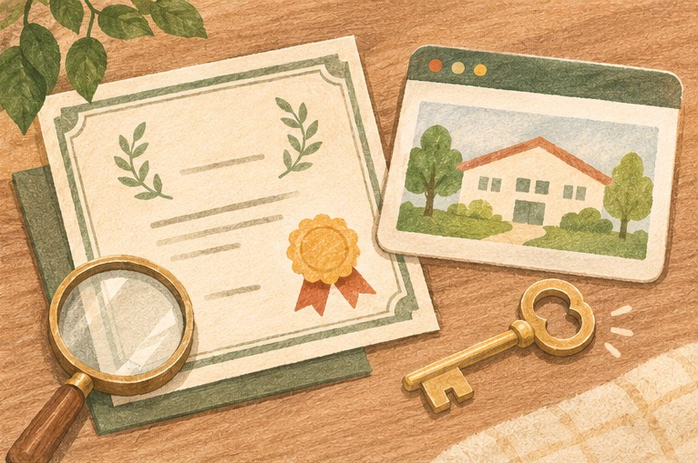
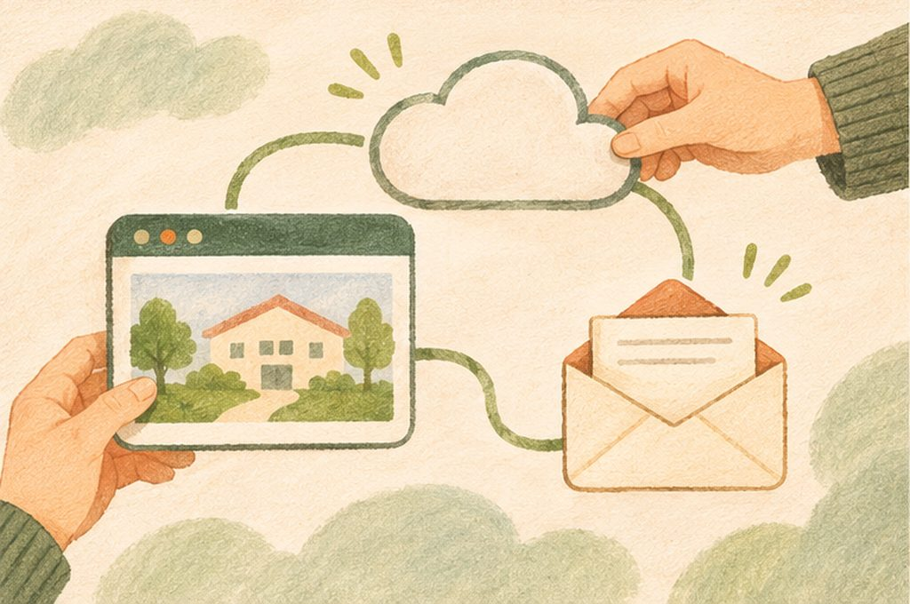
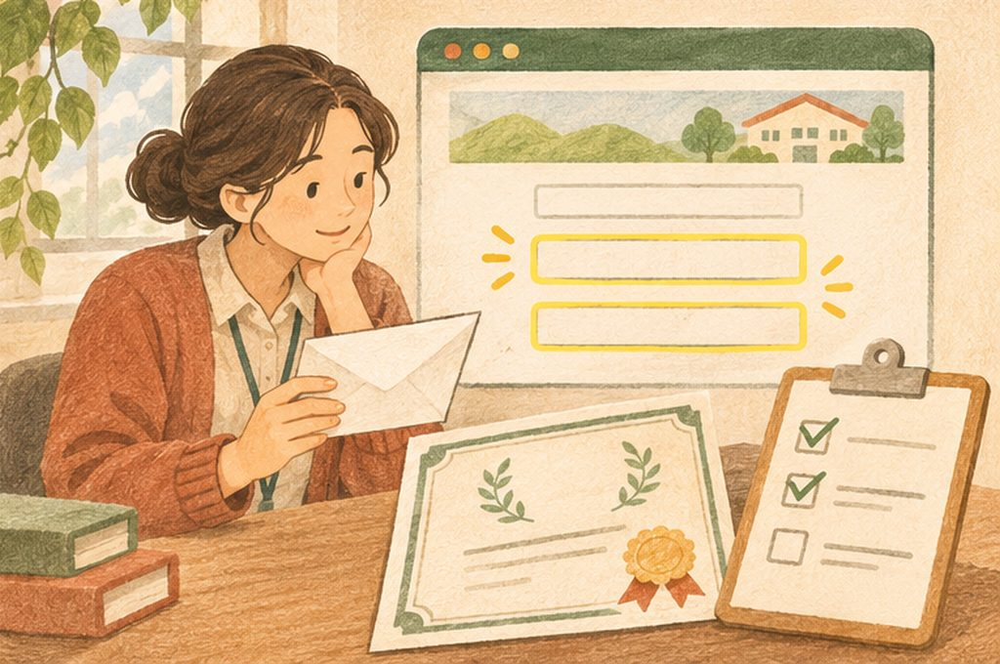

계정을 만들기 전,
우리 기관부터 확인해요.
기관 계정이 아직 없다면 구글 비영리단체 프로그램 가입과 인증이 출발점입니다. 비영리단체 인증을 받은 다음, 워크스페이스를 별도로 활성화합니다.
개인용 구글 계정을 하나 더 만드는 것과는 다릅니다. 기관이 관리하는 도메인으로 직원 계정을 만들고, 관리자가 계정과 서비스를 관리하는 과정을 시작하는 것입니다. 앞으로 구글 워크스페이스와 AI를 업무에 활용하기 위한 첫 준비라고 생각하시면 됩니다.
- 기관 정보와 증빙 서류신청할 기관명, 고유번호, 기관 정보와 고유번호증 또는 사업자등록증 사본을 확인하세요.
- 기관 홈페이지와 도메인주소가 정상적으로 열리는지, 홈페이지 하단에 기관명과 고유번호가 잘 보이는지 확인하세요.
- 연락받을 이메일과 담당자심사 중 추가 요청을 확인할 이메일, 첫 관리자 담당자, 도메인 설정 담당 업체의 연락처를 준비하세요.

지금 우리 기관은 어느 상황인가요?
상황을 누르면 먼저 할 일을 알려 드립니다.
가입은 다섯 단계로 진행됩니다.
핵심 순서는 비영리 인증 → 워크스페이스 준비 → 도메인 확인 → 활성화 → 적용 확인입니다. 인증 승인과 제품 활성화 승인을 나누어 생각하시면 덜 헷갈립니다.
비영리단체 프로그램에 가입하고 인증받기
구글 비영리단체 프로그램 사이트 (새 창)에 로그인합니다. 우리 기관을 검색한 뒤, 등록되어 있지 않다면 추가합니다. 기관 정보와 요청받은 서류를 등록하세요.
심사 대기 중에는 신청 이메일을 계속 확인합니다. 추가 정보나 증빙 요청이 오면 안내에 따라 응답하세요. 비영리단체 인증이 승인되면 제품 활성화를 시작할 수 있습니다.
워크스페이스 체험판과 첫 관리자 계정 준비하기
비영리단체 프로그램에서 워크스페이스 시작 안내를 엽니다. 아직 사용 중이 아니라면 그 안내에 연결된 체험판 가입 경로로 진행합니다. 사용할 기관 도메인을 입력하고, 첫 관리자 계정을 만듭니다.
도메인은 기관의 인터넷 주소이고, 관리자 계정은 직원 계정과 설정을 관리하는 계정입니다. 관리자 주소와 복구 수단을 기관 내부에 안전하게 기록해 두세요.
이미 워크스페이스를 사용 중이라면 새로 가입하지 마시고, 기존 사용 여부를 선택해 도메인을 제출하는 안내를 따르세요.도메인 설정 코드를 등록하고 확인 마치기
관리 콘솔의 안내에 따라 도메인 확인 코드를 복사합니다. 홈페이지 제작 업체 또는 실제로 도메인의 주소 설정을 관리하는 곳에 등록을 요청하세요. 직접 관리하고 있다면 해당 도메인 설정 화면에서 진행합니다.
설정이 반영되면 관리 콘솔로 돌아와 확인을 마칩니다. 이 과정은 “우리 기관이 이 도메인을 소유·관리합니다”라는 사실을 확인하는 절차입니다. 다음 섹션에서 작은 흉내 화면으로 연습하실 수 있습니다.
구글에 비영리 워크스페이스 활성화 요청하기
도메인 확인을 마쳤다면 비영리단체 프로그램으로 돌아갑니다. 워크스페이스의 활성화 안내에 따라 확인한 도메인을 제출하고 검토를 요청하세요.
인증받은 기관과 실제 사용하는 도메인의 관계를 추가로 확인할 수 있습니다. 메일로 오는 승인 결과와 추가 요청을 확인해 주세요.
무료 비영리 버전이 적용되었는지 확인하기
승인 메일을 받은 뒤 관리 콘솔의 결제 › 구독에서 적용된 제품을 확인합니다. 무료 비영리 버전을 신청했다면 해당 비영리 구독으로 적용되었는지 확인하세요. 체험판을 만들었다는 사실만으로 비영리 버전 적용이 끝난 것은 아닙니다.
구독 이름과 결제 정보를 함께 살펴보고, 화면과 승인 안내가 다르면 지원 메뉴에서 문의하세요. 확인을 마친 뒤 직원 계정 준비와 다음 교육으로 넘어가시면 됩니다.
다섯 단계를 한 번 더 짚어 볼까요?
번호를 직접 누르거나 다음 단계로 이동하세요.
첫 번째 · 비영리단체 인증
비영리단체 프로그램에 로그인하고, 기관을 검색·추가한 뒤 정보와 서류를 등록합니다. 심사 메일의 추가 요청을 확인하세요.
강의에서 안내한 설치 영상은 2026년 화면을 기준으로 전체 과정을 설명합니다. 제공된 원고에 영상 주소가 없어, 이 페이지에서는 공식 가입·활성화 안내 (새 창)를 연결해 두었습니다. 실제 화면의 메뉴 이름과 순서는 달라질 수 있습니다.
도메인 연결, 혼자 다 하지 않으셔도 됩니다.
확인 코드는 기관 주소에 붙이는 작은 확인표와 같습니다. 코드를 복사하고, 주소 설정을 관리하는 분께 전달한 다음, 관리 콘솔에서 확인을 마치는 흐름을 기억하세요.

업체에 요청할 때 이렇게 전달하세요.
- “기관 워크스페이스 가입을 위해 도메인 소유권 확인이 필요합니다.”라고 목적을 알려 주세요.
- 관리 콘솔에 표시된 기록 종류, 이름 또는 호스트, 값을 빠짐없이 전달하세요. 화면 캡처도 도움이 됩니다.
- 등록을 완료했다는 답을 받으면 관리 콘솔에서 확인을 실행하세요. 아직 확인되지 않는다면 값과 등록 위치를 다시 점검합니다.
도메인 확인을 미리 연습해 보세요.
실제 설정은 바뀌지 않는 연습 화면입니다. 버튼을 차례로 눌러 보세요.
도메인 소유권 확인 · 1 / 3
먼저 확인 코드를 준비합니다.
실제 코드가 아닌 연습용 예시입니다. 실제 신청에서는 관리 콘솔에 나온 값을 사용하세요.
google-site-verification=연습용-확인코드같은 거절 메일이 반복된다면.
활성화 신청 후 이런 메일을 받기도 합니다. 안내대로 설명서를 여러 번 제출해도 같은 답만 돌아왔다면, 먼저 무엇을 확인하지 못했는지부터 짚어 보세요.
원인을 찾는 곳은 관리 콘솔의 지원 메뉴입니다.
기관 관리자 계정으로 관리 콘솔에 로그인한 뒤, 지원 또는 도움말 › 도움말 어시스턴트에서 거절 문구를 그대로 알려 주고 확인할 항목을 질문해 보세요. 현재 화면에서는 오른쪽 위의 도움말에서 지원 연결이 시작될 수도 있습니다.
강의에서 소개한 한 장애인생활시설의 실무자는 이 경로로 문제를 확인했습니다. 영문 도메인과 한글 기관명이 달라, 홈페이지의 기관명과 고유번호로 기관과 도메인의 관계를 충분히 확인하지 못한 사례였습니다. 홈페이지 정보와 서류를 함께 보완해 해결했습니다.
강의에서는 자동 인식의 어려움으로 설명한 사례입니다. 실제 심사가 모두 자동으로 이루어진다고 확인된 것은 아니므로, 신청별 안내와 공식 지원 답변을 기준으로 조치하세요.

이 사례에서는 다음 순서로 해결했습니다.
- 홈페이지 화면을 캡처했습니다.
도메인 주소, 기관명, 홈페이지 하단의 고유번호가 보이도록 준비하고 각각을 표시했습니다. - 고유번호증 또는 사업자등록증 사본을 준비했습니다.
홈페이지에 표시된 정보와 증빙 서류의 기관 정보가 맞는지 확인했습니다. - 받은 거절 메일에 두 자료를 첨부해 회신했습니다.
이 사례에서는 회신할 수 없다는 안내가 있는 메일에도 답장을 보냈고, 이후 처리가 진행되었습니다. 같은 방식이 모든 메일에서 접수되는 것은 아닙니다. 현재 안내의 제출 경로를 확인하고, 회신이 닿지 않으면 공식 문의 양식을 이용하세요. - 이어 온 디지털 보안 설문조사에 응답했습니다.
이 사례에서는 비영리단체 디지털 보안 설문조사 요청을 받은 뒤 응답했고, 이후 승인 메일을 받았습니다. 설문은 모든 기관에 공통으로 요구되는 단계라고 단정하지 마시고, 실제 받은 요청에 따라 진행하세요.
지원 메뉴를 찾아가는 연습
거절 메일을 받았을 때의 메뉴 흐름을 익혀 보세요.
관리 콘솔
거절 사유를 확인하고 싶으신가요?
관리자 계정으로 로그인했다면 지원 또는 도움말을 찾습니다.
미리 막는 방법도 기억하세요. 기관명이 한글이고 도메인이 영문이라면, 신청 전에 홈페이지 하단에 기관명과 고유번호가 잘 보이는지 확인하세요. 영문 주소만 보아도 어느 기관의 홈페이지인지 연결 지을 수 있도록 실제 기관 정보를 명확히 제시하는 것이 중요합니다.
“같은 곳에서 막혀 계신 분께
도움이 되길 바랍니다.”강의에서 나눈 마음 · 해결 경험을 다음 실무자에게 전합니다.
지원 메뉴 참고: 구글 워크스페이스 공식 지원 안내 (새 창). 표시되는 지원 옵션은 계정의 권한과 구독에 따라 다를 수 있습니다.
도메인은 처음에 신중하게,
바꿀 때는 차근차근.
아직 도메인을 정하지 않으셨다면, 비영리 법인·단체의 성격에 맞는 or.kr을 우선 검토하세요. 기관이 이미 쓰고 있는 주소가 있다면, 먼저 현재 설정과 이용 중인 서비스의 자격 요건을 확인합니다.
한국인터넷정보센터의 등록 자격에서 or.kr은 비영리 법인·단체, co.kr은 법인 또는 개인에 해당합니다. 비영리 혜택은 각 서비스가 별도로 심사합니다. 도메인의 끝부분만으로 모든 서비스의 승인 여부를 판단할 수는 없습니다.
강의의 핵심은 “처음부터 기관 성격에 맞는 도메인을 준비하자”는 점입니다. 디자인 도구 등 비영리 무료·할인 서비스를 신청할 때도 해당 서비스의 최신 자격 요건과 요구 서류를 확인하세요. 구글의 비영리 인증이 다른 서비스의 승인까지 대신해 주지는 않습니다.
등록 자격 근거: 한국인터넷정보센터의 도메인 안내 (새 창). 구글 가입 자격은 비영리단체 프로그램 요건 (새 창)을 함께 확인하세요.
우리 상황에 맞는 방법을 살펴보세요.
처음 정하는 경우와 이미 사용 중인 경우를 비교합니다.
기관 성격에 맞는 주소를 먼저 정하세요.
비영리 법인·단체용 or.kr의 등록 자격을 확인하고, 기관을 알아보기 쉬운 주소를 검토하세요. 구입할 때 기관이 소유·관리할 수 있도록 담당자와 등록 정보를 기록해 두세요.
이미 co.kr을 쓰고 있다면, 이렇게 검토하세요.
필요하다면 or.kr을 추가로 등록하고 기존 워크스페이스에 연결하는 방법을 검토할 수 있습니다. 기관 계정을 새로 만드는 대신 같은 환경에서 주소를 추가하는 접근입니다. 다만 새 주소를 연결했다고 직원의 로그인 주소나 기본 도메인이 자동으로 바뀌지는 않습니다.
- 전환 목적부터 확인합니다. 신청할 서비스가 어떤 증빙을 요구하는지 살펴보고, 주소 변경이 실제로 필요한지 판단하세요.
- 새 도메인을 추가하고 소유권을 확인합니다. 같은 워크스페이스의 관리 콘솔에서 연결을 준비합니다. 기본 도메인으로 바꿀 계획이면 지원팀과 보조 도메인 추가 방식을 먼저 상의하세요.
- 두 주소를 함께 운영할 기간을 둡니다. 직원 로그인, 메일 수신, 홈페이지, 외부 서비스 연결과 안내문을 점검합니다. 같은 계정의 주소를 바꾸는 전환이라면 자료를 새 계정으로 일일이 옮기는 방식은 피할 수 있지만, 외부 서비스는 별도 확인이 필요합니다.
- 기존 도메인 만료 전에 전환 상태를 확인합니다. 강의에서는 기존 도메인 만료 시점을 전환의 기준으로 삼는 방법을 소개했습니다. 실제로는 예전 주소로 오는 메일과 서비스 연결을 충분히 점검하고, 필요하다면 기존 도메인을 더 유지하세요.
자주 묻는 질문
강의의 현장 사례에서 나온 질문과 가입 중 헷갈리기 쉬운 지점을 모았습니다. 질문을 누르면 답이 펼쳐집니다.
기관 계정이 아직 없는데, 어디서 시작하나요?
같은 거절 메일만 와요. 설명서를 다시 내면 될까요?
기관명은 한글, 도메인은 영문이라서 문제인가요?
“회신할 수 없는 메일”에도 서류를 보내도 되나요?
디지털 보안 설문조사에 꼭 응답해야 하나요?
도메인 설정을 몰라도 가입할 수 있나요?
이미 co.kr이면 도메인을 꼭 새로 사야 하나요?
새 도메인으로 바꾸면 계정과 자료를 모두 옮겨야 하나요?
비영리 인증 승인 메일을 받았으면 끝난 것 아닌가요?
세 문제로 가볍게 복습해요.
문제마다 하나씩 고른 뒤 정답을 확인해 보세요. 틀려도 괜찮습니다. 해설을 보고 다시 고르실 수 있습니다.
오늘은 여기까지 해 보세요.
바로 가입을 끝내기보다,
우리 기관의 준비 상태부터 하나씩 확인하세요.
체크한 내용은 이 브라우저에 저장됩니다.
공용 컴퓨터에서는 사용 후 초기화해 주세요.